Joint Embedding Predictive Architectures (JEPAs) offer a compelling framework for learning world models in compact latent spaces, yet existing methods remain fragile, relying on complex multi-term losses, exponential moving averages, pre-trained encoders, or auxiliary supervision to avoid representation collapse. In this work, we introduce LeWorldModel (LeWM), the first JEPA that trains stably end-to-end from raw pixels using only two loss terms: a next-embedding prediction loss and a regularizer enforcing Gaussian-distributed latent embeddings. This reduces tunable loss hyperparameters from six to one compared to the only existing end-to-end alternative. With ~15M parameters trainable on a single GPU in a few hours, LeWM plans up to 48× faster than foundation-model-based world models while remaining competitive across diverse 2D and 3D control tasks. Beyond control, we show that LeWM's latent space encodes meaningful physical structure through probing of physical quantities. Surprise evaluation confirms that the model reliably detects physically implausible events.
TL;DR: LeWM is a JEPA-based world model that avoids representation collapse using a simple Gaussian regularizer (SIGReg), trains end-to-end from pixels with only two loss terms, and achieves competitive control performance at a fraction of the compute cost.
Model Architecture. LeWM is built upon two components: an encoder and a predictor. The encoder maps a given frame observation \(\vo_t\) into a compact, low-dimensional latent representation \(\vz_t\). The predictor models the environment dynamics in latent space by predicting the embedding of the next frame observation \(\hat{\vz}_{t+1}\) given the latent embedding \(\vz_t\) and an action \(\va_t\).
$$\text{LeWorldModel} \left\{\begin{aligned} \text{Encoder:} \quad & \vz_t = \enc(\vo_t) \\ \text{Predictor:} \quad & \hat{\vz}_{t+1} = \pred(\vz_t, \va_t) \end{aligned}\right.$$
Training Objective. The complete LeWM training objective combines a classical prediction loss \(\gL_{\rm pred}\) with a regularization term:
$$\gL_{\rm LeWM} \triangleq \gL_{\rm pred} + \lambda\,\mathrm{SIGReg}(\mZ)$$
The prediction loss \(\gL_{\rm pred}\) is a standard latent prediction loss. SIGReg is a regularization enforcing a Gaussian distribution of the latent space; we refer to LeJEPA for details.
LeWM plans purely from pixels, with no proprioceptive information used at any stage. At test time, LeWM encodes a start and goal image into latent space, then uses the Cross-Entropy Method to optimize an action sequence by rolling out candidates through the predictor and picking those whose final embedding lands closest to the goal. Because each frame is encoded as a single 192-dim token (roughly 200× fewer tokens than DINO-WM), planning completes in about ~1 second versus 47 seconds for DINO-WM, a 48× speedup. We perform ablations on several design choices of LeWM and find that LeWM reaches similar performances while being orders of magnitude more efficient than DINO-WM.
Planning performance at a fixed compute budget (FLOPs). LeWM achieves competitive results with a fraction of the computation required by baselines.
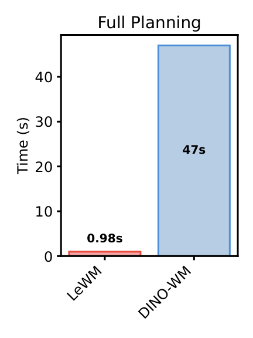
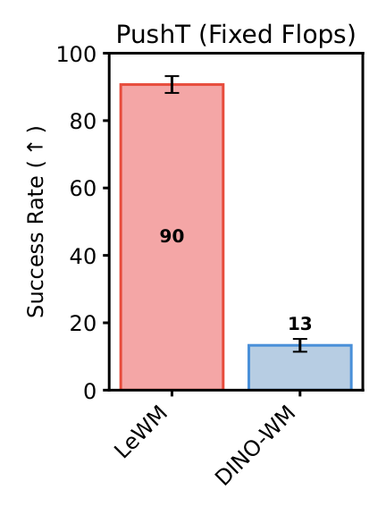
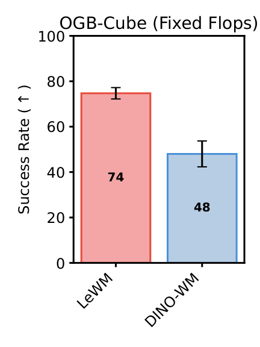
Planning performance across four environments: Two-Room (2D navigation), Reacher (2-joint arm control), Push-T (block manipulation), and OGBench-Cube (3D robotic pick-and-place). LeWM outperforms PLDM on all challenging tasks and surpasses DINO-WM on Push-T and Reacher, even without pre-trained features. On Push-T, LeWM beats DINO-WM even when DINO-WM uses additional proprioceptive inputs. DINO-WM retains an edge on the visually complex 3D OGBench-Cube task, likely due to richer visual priors from large-scale pretraining. LeWM underperforms on Two-Room; we suspect this is due to the intrinsic dimensionality of the task being too low, which may hinder the Gaussian regularizer from producing a well-structured latent space. Additional checkpoints for baselines are available on Google Drive.
Two-Room
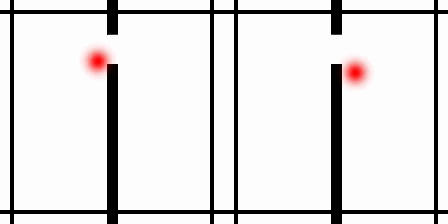
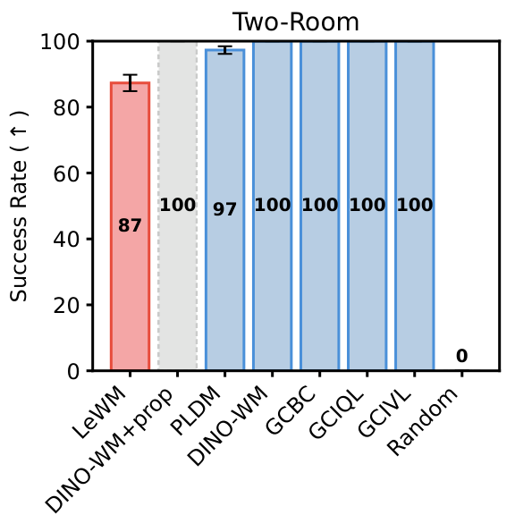
Reacher
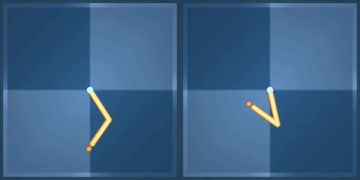
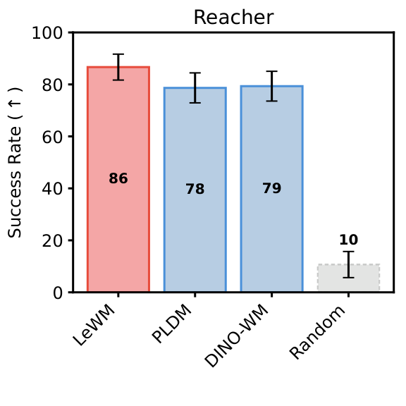
Push-T
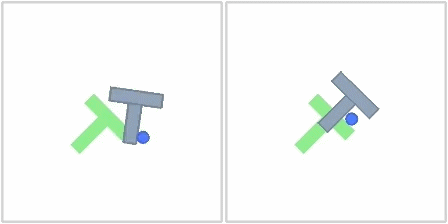
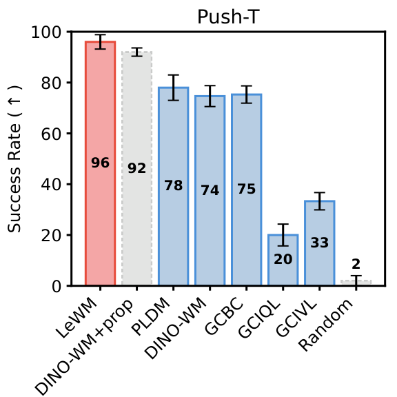
OGBench Cube
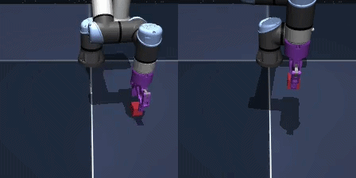
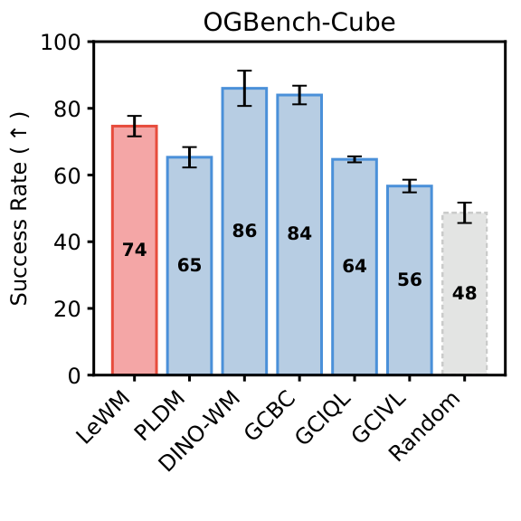
Additional qualitative rollouts for each environment are shown below, including both success and failure cases. Each clip shows two frames side by side: left is the planning rollout and right is the visual goal.
Success
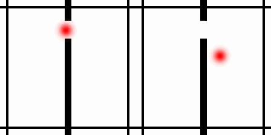
Success
Failure
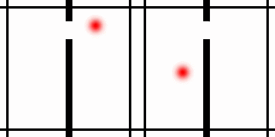
Success
Success
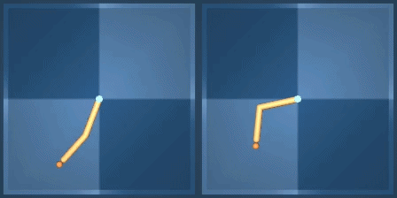
Failure
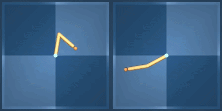
Success
Success
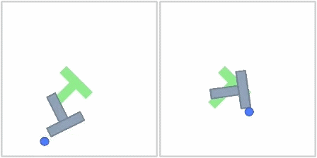
Failure
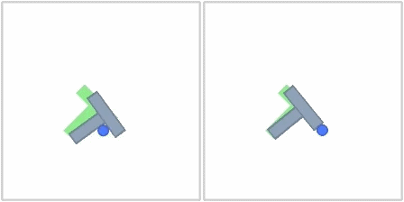
Success
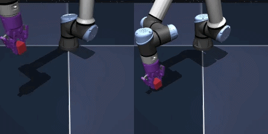
Failure
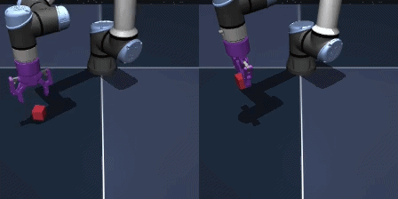
Failure
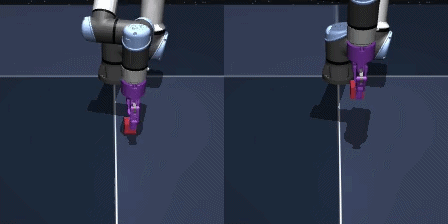
We evaluate which physical quantities are recoverable from LeWM's latent representations by training a lightweight supervised probe to predict physical quantities of interest from latent embeddings.
Physical latent probing results on Push-T. LeWM consistently outperforms PLDM while remaining competitive with DINO-WM. The strong probing performance of DINO-WM on certain properties may stem from its foundation-model pretraining: the DINOv2 encoder is trained on two orders of magnitude more data (∼124M images) spanning a far more diverse distribution, which likely allows it to capture some physical properties in its embeddings by default.
| Model | Agent Location | Block Location | Block Angle | |||||||||
|---|---|---|---|---|---|---|---|---|---|---|---|---|
| Linear | MLP | Linear | MLP | Linear | MLP | |||||||
| MSE ↓ | r ↑ | MSE ↓ | r ↑ | MSE ↓ | r ↑ | MSE ↓ | r ↑ | MSE ↓ | r ↑ | MSE ↓ | r ↑ | |
| DINO-WM | 1.888 | 0.977 | 0.003 | 0.999 | 0.006 | 0.997 | 0.002 | 0.999 | 0.050 | 0.979 | 0.009 | 0.995 |
| PLDM | 0.090 | 0.955 | 0.014 | 0.993 | 0.122 | 0.938 | 0.011 | 0.994 | 0.446 | 0.745 | 0.056 | 0.972 |
| LeWM | 0.052 | 0.974 | 0.004 | 0.998 | 0.029 | 0.986 | 0.001 | 0.999 | 0.187 | 0.902 | 0.021 | 0.990 |
To visualize the predictions made by LeWM, we train a lightweight decoder (used only for visualization, not during training) to reconstruct images from the CLS token embedding. For each environment, we report: (i) the original video, (ii) the video obtained by encoding and decoding each frame independently, and (iii) the video of latent predictions produced by the world model when conditioned on an action sequence. We can see that LeWM captures the most important parts of the scene and reproduces environment dynamics.
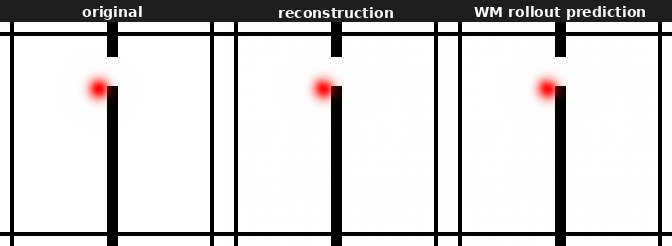
Two-Room
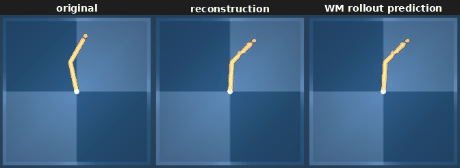
Reacher
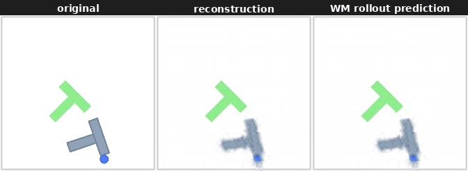
Push-T
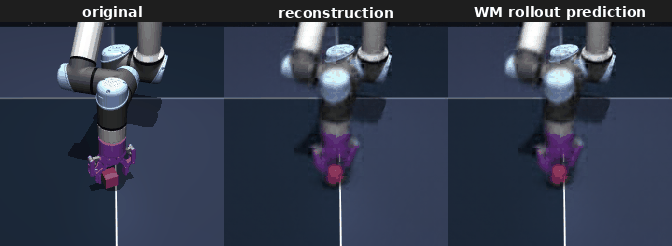
OGBench Cube
A t-SNE visualization of the latent space in the PushT environment suggests that the learned representation captures the spatial structure of the environment, preserving neighborhood relationships and relative positions in the latent space.
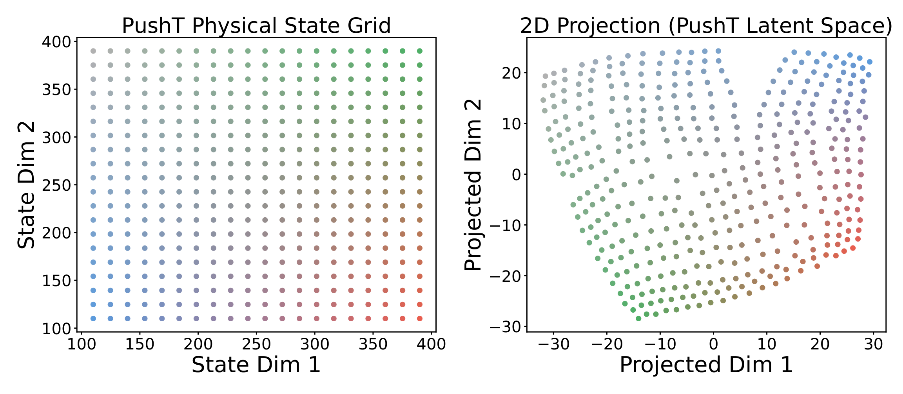
LeWM
To evaluate the physical understanding of our models, we follow the violation-of-expectation paradigm, where a world model should assign higher surprise to events that contradict learned physical regularities.
Unperturbed
Block color change
Teleportation
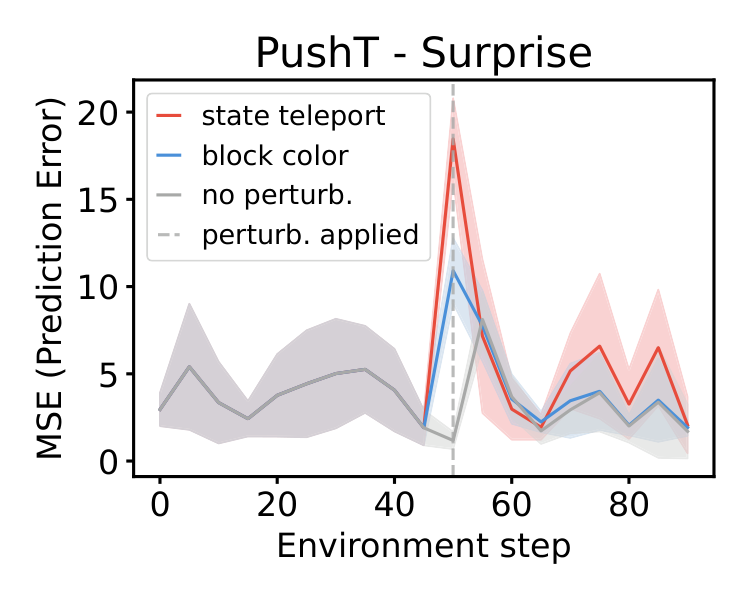
Surprise scores
Unperturbed
Cube color change
Teleportation
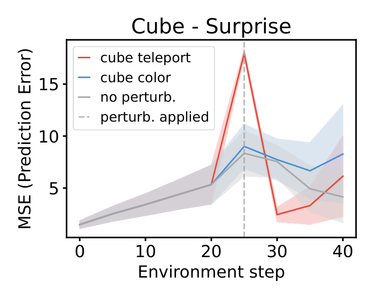
Surprise scores
@article{leworldmodel2026,
author = {Maes, Lucas and Le Lidec, Quentin and Scieur, Damien and LeCun, Yann and Balestriero, Randall},
title = {LeWorldModel: Stable End-to-End Joint-Embedding Predictive Architecture from Pixels},
year = {2026},
}